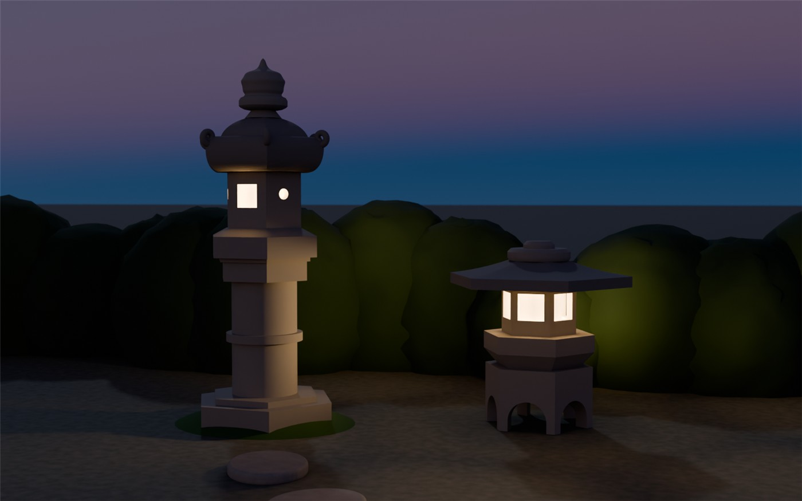
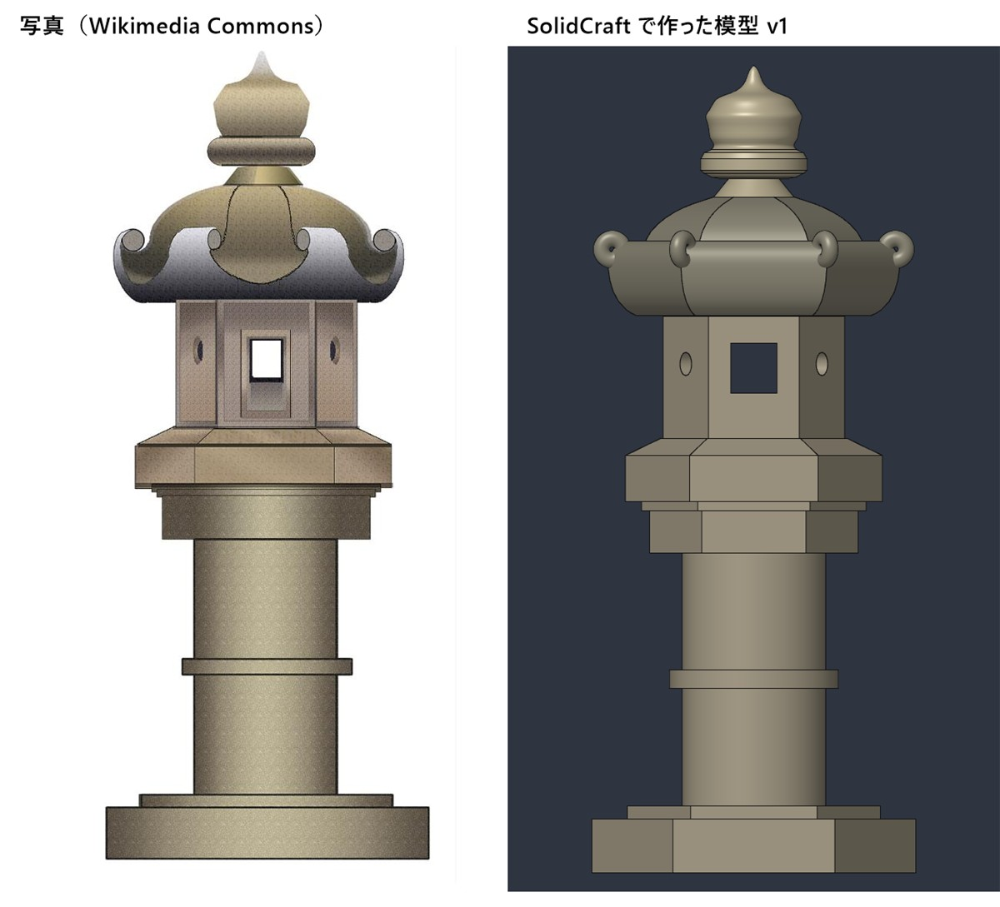
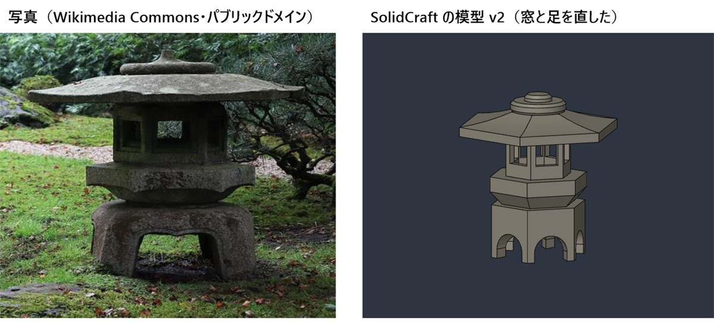
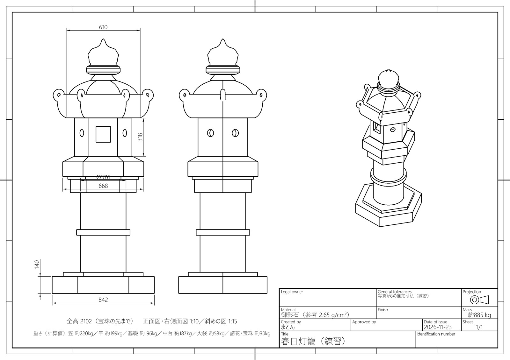
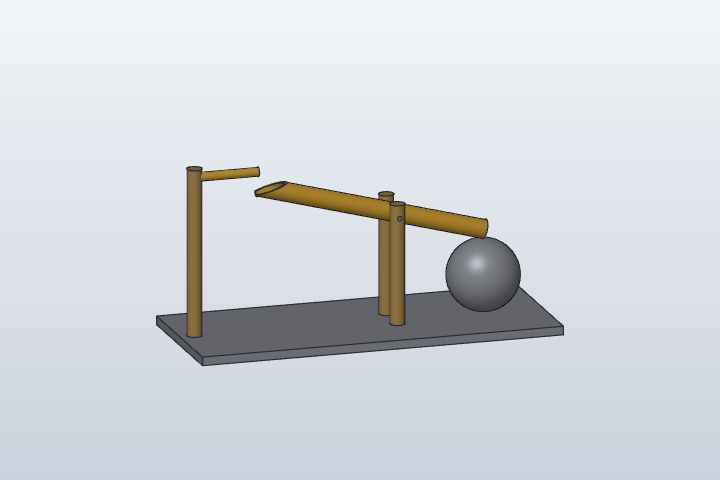
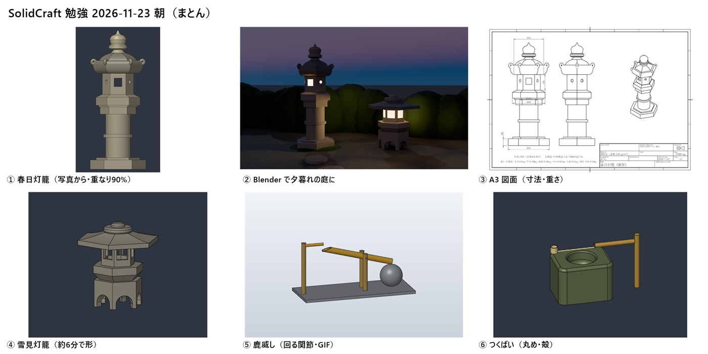

AIに頼んで3Dを作る その2
― 写真から石灯籠を作る
2026年11月23日 朝の記録。「ちょうどいい写真を見つけて、それを題材に勉強して」と頼んだだけで、AI（Claude）が写真探しから組み立て・確かめ・図面・絵までを約1時間25分で進めました。

できたこと5つ
① 写真1枚から、寸法つきの立体
写真の幅を高さごとに測って寸法に直し、六角の段・回転・ロフト（断面をつなぐ）・渦巻きで組み立てました。全高 2,102mm。


② 後から数字だけで直せる
「アーチの幅」「窓の大きさ」に名前を付けておけば、作り直さずに数字を変えるだけで形が変わります。雪見灯籠は写真と並べて、足・窓・アーチをこれで直しました。
③ 重さと図面
材料を御影石（参考値 2.65 g/cm³）にして部品ごとの重さを計算。いちばん重いのは笠で約220kg。寸法入りの A3 図面も出せます。

④ 動く仕組みを試せる
鹿威し（ししおどし）に回る関節を付けて、「竹筒の尻が何度で石に当たるか」をソフトに調べさせました。答えは 15.16°。手計算の約15.0°とほぼ同じ。動きは GIF にしました。

⑤ 他のソフトへ渡せる
STEP（ほかの CAD 用）と glb（Blender 用）で書き出し。上の夕暮れの絵はこれで作りました。

正直なところ
- 寸法は写真からの目分量。実物の寸法・重さではありません。
- 数字を極端にすると、エラーを出さずに形が崩れることがある（アーチを広げすぎると足が消える）。だから毎回、体積や大きさを計算と照らし合わせて確かめています。
- 最後の確認は人の目が要ります。
前日（11/22）の記録：AIに頼んで3Dを作る ― 箱1個から、自分の机をぐるっと回る映像まで
題材の写真（Wikimedia Commons）：「Kasuga-dōrō.jpg」CC BY-SA 3.0／「Florent thomas-penette, Lanterne Yukimi-dōrō, Jardin japonais.jpg」パブリックドメイン／「Morikami Museum and Gardens - Shishi Odoshi Filling Up With Water.jpg」CC BY-SA 4.0／「JapaneseGardenWaterBasin.jpg」CC BY-SA 3.0